梅吉のエコー検査 [梅吉]
週末は梅吉の定期検診でした。
今回は心臓およびお腹のエコー検査が主目的。
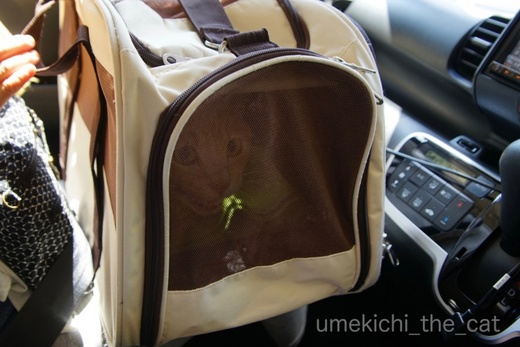
（口ものと緑はレンズの反射かな。エクトプラズム出してるわけじゃありませんw）
この日はあまりにも暑かったので車で病院まで。
（我が家はカーシェア。すぐ近くにステーションがあり『うちの駐車場』と呼ばれていますwww）
歩いて７〜８分の距離なんですが梅吉にも負担だし
何より梅吉を肩掛けキャリーで連れて行くのは結構な重労働。
この暑さじゃニンゲンもバテちゃいますw
梅吉さん久しぶりの車の中でギャン鳴き。
車の音いやなのかな・・・・・
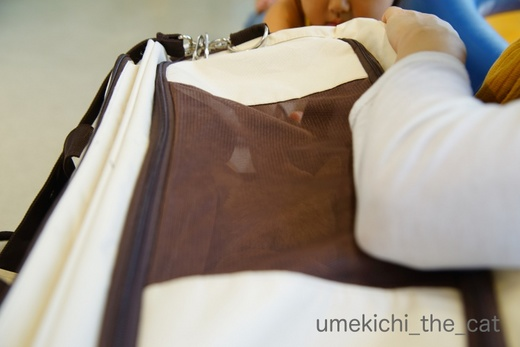
病院の待合室では小さなお友達が出来ましたよ。
写真の上の方、小さな女の子の口元が写っているのがわかるでしょうか。
この日はワンコを連れてきていたのですがおうちにニャンコもいるとのことで
梅吉にも興味津々。
キャリーの蓋を少しだけ開けると優しくなでなでしてくれました。
梅吉も黙ってなでられている・・・
小さい子を怖がるかなと思ったのですけど、驚きです。
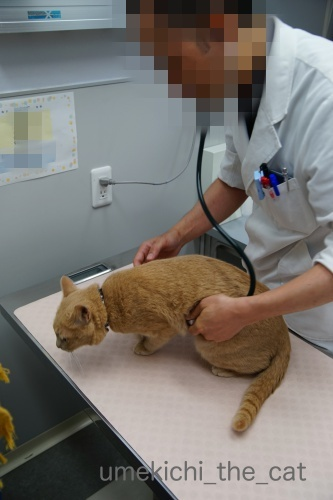
小さなお友達はOKでも先生に触られるのはイヤ(⌒_⌒;
でも！恒例のシャーーーーーッは言わなくなりました。ちょっとつまんない(^▽^;)
今後はマイルド路線で行くのでしょうか。
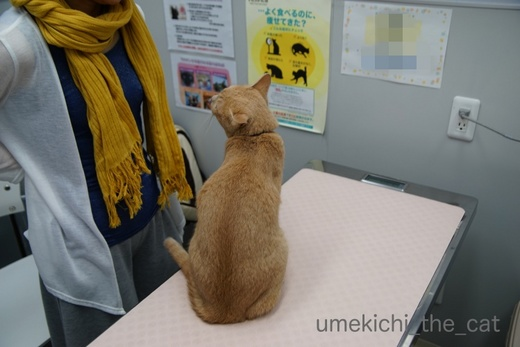
![[猫]](https://blog.ss-blog.jp/_images_e/101.gif) おかーさん もうかえって ええやろか・・・
おかーさん もうかえって ええやろか・・・
ダメですよ。このあとエコー検査です。
エコー検査、毛刈りするのかな？と思っていたのですがしなくて良いんですね。
ニンゲンみたいにゼリーをつける必要もなし。
この病院ではアルコールで拭いてOKなんですって。
エコー検査は診察室の扉の向こう処置室のようなところでします。
見たいといえば見せてくれたのかもしませんが病院側もやりにくいでしょう。
第一梅吉が暴れて押さえつけられたりしたら私が居たたまれなくなるし
病院側もバツが悪いだろうし・・・
処置室に消えて行った梅吉の気配に耳をすませていたのですが
怖いくらい何にも聞こえてきません。
先生や助手さんが梅吉をなだめているような声も聞こえてこない・・・
エコーの画像を撮っているらしい「ピッ」という音が時々聞こえてくるくらい。
なんだなんだと思っているうちに梅吉が帰ってきました。

おなか びしょびしょやん![[むかっ（怒り）]](https://blog.ss-blog.jp/_images_e/152.gif)
検査の間びっくりするくらい良い子だったそうです。
先生から盛大に褒められました(〃ω〃)
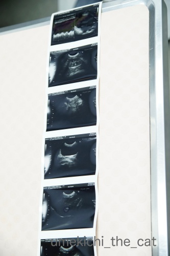
梅吉のエコー画像です。
前回の受診辺りからやけに温順しく、
今回も黙って検査されて先生は「心臓の働きが悪くて元気がないんとちゃうか・・・」と
密かに心配していたそうなんですが・・・
動きも正常、肥大も無しのとっても健康な心臓だったそうです＾＾
胃、肝臓、腎臓も全く問題なし。
ただ一箇所ちょっと気になるところがあったのですが
日頃の健康状態で判断すると大きな事ではないので様子見となりました。
（そのうち記事にするかもしれません）
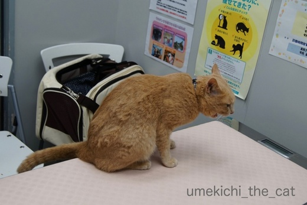
診察台の上で帰るー！！と叫ぶw
（体重は4650gでした。きなこちゃん・・・）
今飲んでいるお薬がうまく作用して心臓、肝臓、腎臓は健康であることがわかって一安心。
次回の受診は3ヶ月後の採血になります。
今よりは暑さもおさまっているかな、いやそうであってくれないと困ります。
 ↑ガブッと一押し↑
↑ガブッと一押し↑
先週末の事なのですが、待ちわびていたこれが届きました！
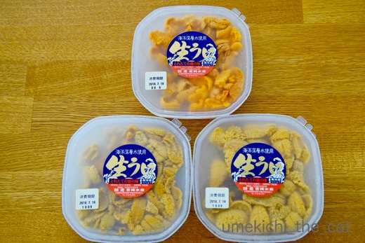
これ！！ウニでーす！！！
下の2パックがキタムラサキウニ、上の1パックがエゾバフンウニ。
どちらも美味しいのですが、私はエゾバフンウニが好きだぁぁぁぁぁぁぁ。
塩水ウニなのですぐに食べなくちゃいけません。
（普通デパートで売っているような柵に乗ったウニはミョウバンで色止めしてあります。
当然味も落ちてます。）
食べるのが忙しいわーＯ(≧▽≦)Ｏ
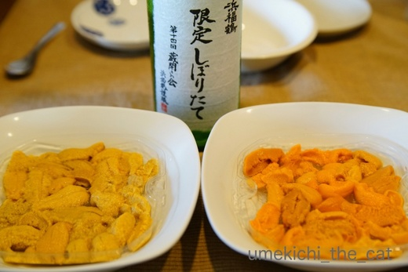
届いた日の夜に早速いただきました。
この日のために冷蔵庫で眠っていた浜福鶴と一緒です＾＾
本当に美味しいウニは醤油もわさびもいりません。
至福のひととき・・・
翌日の昼にはウニクリームパスタを作っていただきました。大満足ー！！
ちなみにこのウニはふるさと納税、北海道寿都町のもの。
北海道のウニは利尻・礼文、積丹、奥尻などが有名ですが
町も強気なので割りが良くありません（こんな言い方して良いのかしら・・・）
日本海側ならどこで採れたウニでも間違いなく美味しいので
あまり産地と思われていない小さな町に「納税」するのもおすすめですよ＾＾
今回は心臓およびお腹のエコー検査が主目的。
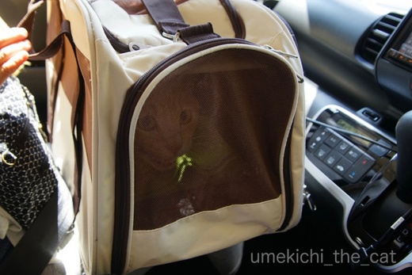
（口ものと緑はレンズの反射かな。エクトプラズム出してるわけじゃありませんw）
この日はあまりにも暑かったので車で病院まで。
（我が家はカーシェア。すぐ近くにステーションがあり『うちの駐車場』と呼ばれていますwww）
歩いて７〜８分の距離なんですが梅吉にも負担だし
何より梅吉を肩掛けキャリーで連れて行くのは結構な重労働。
この暑さじゃニンゲンもバテちゃいますw
梅吉さん久しぶりの車の中でギャン鳴き。
車の音いやなのかな・・・・・
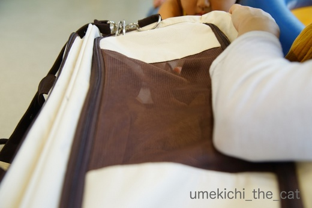
病院の待合室では小さなお友達が出来ましたよ。
写真の上の方、小さな女の子の口元が写っているのがわかるでしょうか。
この日はワンコを連れてきていたのですがおうちにニャンコもいるとのことで
梅吉にも興味津々。
キャリーの蓋を少しだけ開けると優しくなでなでしてくれました。
梅吉も黙ってなでられている・・・
小さい子を怖がるかなと思ったのですけど、驚きです。
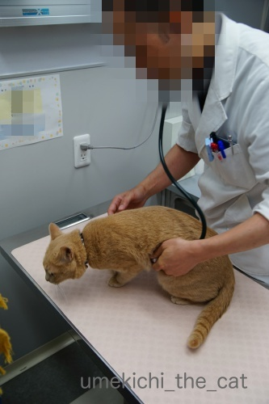
小さなお友達はOKでも先生に触られるのはイヤ(⌒_⌒;
でも！恒例のシャーーーーーッは言わなくなりました。ちょっとつまんない(^▽^;)
今後はマイルド路線で行くのでしょうか。
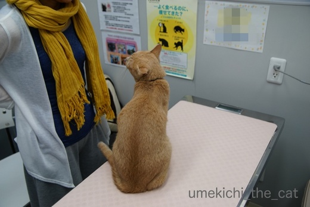
ダメですよ。このあとエコー検査です。
エコー検査、毛刈りするのかな？と思っていたのですがしなくて良いんですね。
ニンゲンみたいにゼリーをつける必要もなし。
この病院ではアルコールで拭いてOKなんですって。
エコー検査は診察室の扉の向こう処置室のようなところでします。
見たいといえば見せてくれたのかもしませんが病院側もやりにくいでしょう。
第一梅吉が暴れて押さえつけられたりしたら私が居たたまれなくなるし
病院側もバツが悪いだろうし・・・
処置室に消えて行った梅吉の気配に耳をすませていたのですが
怖いくらい何にも聞こえてきません。
先生や助手さんが梅吉をなだめているような声も聞こえてこない・・・
エコーの画像を撮っているらしい「ピッ」という音が時々聞こえてくるくらい。
なんだなんだと思っているうちに梅吉が帰ってきました。

検査の間びっくりするくらい良い子だったそうです。
先生から盛大に褒められました(〃ω〃)
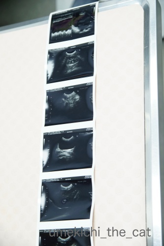
梅吉のエコー画像です。
前回の受診辺りからやけに温順しく、
今回も黙って検査されて先生は「心臓の働きが悪くて元気がないんとちゃうか・・・」と
密かに心配していたそうなんですが・・・
動きも正常、肥大も無しのとっても健康な心臓だったそうです＾＾
胃、肝臓、腎臓も全く問題なし。
ただ一箇所ちょっと気になるところがあったのですが
日頃の健康状態で判断すると大きな事ではないので様子見となりました。
（そのうち記事にするかもしれません）
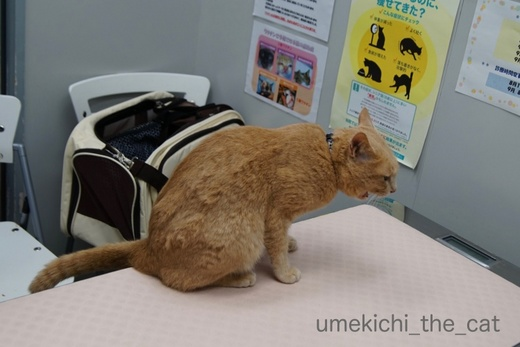
診察台の上で帰るー！！と叫ぶw
（体重は4650gでした。きなこちゃん・・・）
今飲んでいるお薬がうまく作用して心臓、肝臓、腎臓は健康であることがわかって一安心。
次回の受診は3ヶ月後の採血になります。
今よりは暑さもおさまっているかな、いやそうであってくれないと困ります。
先週末の事なのですが、待ちわびていたこれが届きました！
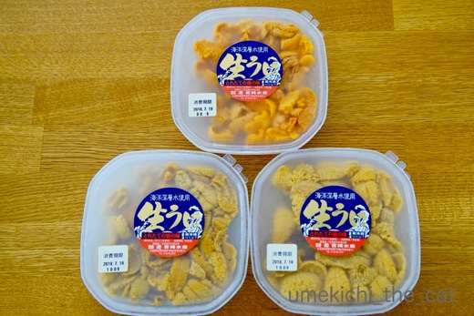
これ！！ウニでーす！！！
下の2パックがキタムラサキウニ、上の1パックがエゾバフンウニ。
どちらも美味しいのですが、私はエゾバフンウニが好きだぁぁぁぁぁぁぁ。
塩水ウニなのですぐに食べなくちゃいけません。
（普通デパートで売っているような柵に乗ったウニはミョウバンで色止めしてあります。
当然味も落ちてます。）
食べるのが忙しいわーＯ(≧▽≦)Ｏ
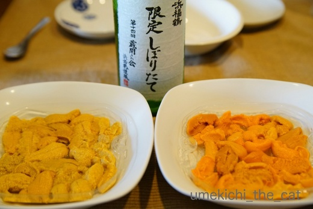
届いた日の夜に早速いただきました。
この日のために冷蔵庫で眠っていた浜福鶴と一緒です＾＾
本当に美味しいウニは醤油もわさびもいりません。
至福のひととき・・・
翌日の昼にはウニクリームパスタを作っていただきました。大満足ー！！
ちなみにこのウニはふるさと納税、北海道寿都町のもの。
北海道のウニは利尻・礼文、積丹、奥尻などが有名ですが
町も強気なので割りが良くありません（こんな言い方して良いのかしら・・・）
日本海側ならどこで採れたウニでも間違いなく美味しいので
あまり産地と思われていない小さな町に「納税」するのもおすすめですよ＾＾
2018-07-23 05:35
nice!(63)
コメント(27)

カフェオレ色の梅吉

梅吉 2023年8月10日 永眠


梅吉と出会った譲渡会

犬猫の理由なき殺処分ゼロ
妄想広告
UMEKICHI 光

爆発的に早い！
時々攻撃的！
Thanks to Mr.Boss365
爆発的に早い！
時々攻撃的！
Thanks to Mr.Boss365

梅吉さん、ちいさなお友達ができてよかったにゃあ～^^
by ニコニコファイト (2018-07-23 06:48)
私は車で30分ぐらい走って病院に行ってます。
今の子たちは大人しく乗ってくれますが
長男君は鳴きまくりでしたね。
思い出しちゃいました＾＾；
by ぽちの輔 (2018-07-23 07:32)
梅吉さん、病院で良い子にしてるなんて
大人になったんですねぇ( ^ω^ )
うちは相変わらず賑やかでかみさんによじ登ろうとしたり、
腕の中に隠れよう（サイズ的に無理w）としたり・・・
が、先生が目の前に来ると石になって成長が見られません(⌒-⌒; )
検査結果、無問題で良かったです*\(^o^)/*
美味しいウニがこんなに(°_°)
北海道寿都町、早速調べます_φ(･_･
by ニッキー (2018-07-23 08:02)
梅吉様も大人になったんですねぇ(〃'∇'〃)
道産子はウニを貰えれば良い子になる^_^;
by middrinn (2018-07-23 08:42)
良かったねーー！！！しかも、とっても良い子で検査を受けていたなんて。。。泣ける(ノ◇≦。) ﾋﾞｪｰﾝ!!
お薬だけじゃなく、愛の力！の賜物だと私は信じています。これからも、うんとうんと愛されて健やかに過ごしてね♪
by Ginger (2018-07-23 10:51)
こんにちは。
昨日は、詳細コメント感謝です！！
子供になでなでは、梅吉君・人見知りしなくて良い傾向ですね！！
病院で良い子の梅吉君が羨ましいですね！！
すももは「シャー・シャー・ガブ・ウッぎゃー」ですから・・・・
検査するのも一苦労です！！(￣△￣) ！！
何はともあれ、問題なしは良かったですね！！安心！！（⌒ー⌒）
限定しぼりたてのウニ３（さん）ですね！！
完食されたみたいですが・・・
次は、ちぃさんの定期検査ですね！？(=^･ｪ･^=)
by Boss365 (2018-07-23 10:52)
病院でとっても良い子の梅吉さん♪
頑張りましたね(#^.^#)
気になることもあったみたいですが
おおむね良好とのことで良かったです！
by きぃ (2018-07-23 11:26)
梅吉さん、小さな女の子は悪さをしないと分かっているのですね。
それにしても、おかーさんの心配をよそにエコーでは静かにして、
大人になったのですね。
おかーさんと一体化の写真（笑）微笑ましいです。
ウニ、顎を落としていませんか？（笑）
by kiki (2018-07-23 12:01)
梅吉さん、検査結果おおむね良好で何よりです。
ふだん大暴れなのに大人しいと、ホントに具合悪いのかと心配になっちゃいますよね^^;
ウチは普段は自転車の荷台に積んで病院ですが、真夏と真冬はタクシー使うようになりました。自転車だと鳴かないのにタクシーだと騒ぎます。
音が怖いのかもしれませんね。
黄金色に輝くウニ♪
そうか～美味しいウニは何もつけずに、しぼりたての日本酒で、最高(#^^#)
by ゆきち (2018-07-23 12:52)
梅吉さん小さな子に優しい良い男ですねぇ。病院には慣れちゃったようですが、車は音もいろんな匂いも怖いのかもしれませんね。これも慣れの問題です。人間も一病息災という場合もありますし、梅吉さんも大きな問題なく過ごせると良いですね。
by zombiekong (2018-07-23 14:13)
梅吉君がんばったね^^
おつかれさま！
シャーって言わなくなったのね。先生が梅吉君のためにやってくれてるって分かったのかなあ？ｗｗｗ
これが例のウニですね！
あ〜〜〜マジでおいしそうだーーー
来月札幌に帰るから、生ウニ食べてきたいっ(笑)
by リュカ (2018-07-23 14:46)
検査結果良好で、良かったですね〜。
この暑さじゃ、猫キャリーバッグに入るのも、一苦労と思います。
お疲れ様でした！
きゃ〜美味しそうなウニ！！！
暑さでとろけるより美味しいウニでとろけたい^ ^;！！！
by nachic (2018-07-23 15:05)
あらまっ、梅吉さん！
上手に検診を受けてますね。偉いですねーーー(^.^)
賢い梅吉さんのことだから、
この先生は優しいし上手だから、ワシもおとなしくするっ！と悟ったのでしょう。
そっか。エコーはお腹がしっとりするのですね（笑）
そして、問題ない結果でよかったです＼(^o^)／
あわわぁーーー、生ウニーーー！！
これは、ヤバいヤツです！！
濃厚すぎて、こめかみがビンビンしちゃうヤツ。
私も味の強いバフン派です。
なかでもエゾバフンは、トクベツだと聞いたことがあります(^-^)
by morichan (2018-07-23 16:23)
梅吉君検査お疲れ様です～～(*^_^*)
体重4650ｇああ ^_^; 完全にきなこが抜いちゃいましたね~。
ナノときなこの平均は4500ｇなんだけどなぁ←だから？
by palpal (2018-07-23 16:37)
ウニちゃん問題なくてよかったねー♪
…
…あ、ごめんなさい＞＜
ウメちゃん♪問題なくてよかったねー＾＾♪
検査中に飼い主に心配かけまいと、必死で我慢したウメちゃんに拍手
( ´∀`ﾉﾉ☆ﾊﾟﾁﾊﾟﾁﾊﾟﾁﾊﾟﾁ
by 猫毬 (2018-07-23 16:45)
梅しゃま。異常なく何より♪
又、お利口さんで診察を受けられたなんて大人じゃ〜ん！！浪速の男はこうでなくっちゃ(^^)b
母さまはかなりドキドキだったかと…こっちの心臓がやられてしまうわ笑
次回の検査までまた頑張ろうね、梅しゃま☆
by くつしたにゃん (2018-07-23 17:15)
梅吉さん、検査頑張りましたね。
結果も良好で良かったです(^^)
ピッカピカのバフンウニと美味しいお酒の組み合わせは最高ですね！
by kou (2018-07-23 18:24)
梅吉さん病院でおとなしかったのですね！
検査結果も良くて一安心ですね(^^)
by ma2ma2 (2018-07-23 19:29)
梅吉さん、少し慣れてきたのかな？
この炎天下では運ぶのも大変ですよねー！
うちのなんか、「殺されるー」って感じで叫び通しだったし。
（そういえば、別な季節にだけど、おとなしい子は歩いて運んだこともあります）
ウニ！
こんな大量に～贅沢ですね～想像するだけでもほわわん＾＾
by sana (2018-07-23 20:22)
梅吉さんのシャーーーーーッのファンです。
なので、がっかりです(^^;
梅吉さんは立派に成長しているんですね。
なので、ひと安心です(^^)
by riverwalk (2018-07-23 23:40)
さすが人見知りしない梅吉さん、
誰とでも仲良くなれるのですね。
（病院の先生を除く。^^;）
検査結果も良くて何よりです。
ウニ、何もつけずに頬張るのが基本ですよね。
だけど、もう何年も食べてません。。。ははっ。^^;
by yes_hama (2018-07-23 23:45)
梅さま、健診おつかれさまでした！
とりあえず、結果良しで何よりです。
そうそう、ねこ用のエコーってアルコールですよね。
終わった後がくさくてくさくて。
それですぐケージに閉じ込めちゃうからアル中にならないか
毎度心配しています(｡-_-｡)（本当は完全に飛んでから入れて欲しい）
ウニーー！！
実は今日、我が家にも届いてウニ丼でした。わたしは乙部町でした^^
オホーツク海ばんざい！！
by Ja-Kou66 (2018-07-24 00:06)
梅吉くん、頑張りましたね。いいこちゃんです(*^-^*)
この姿を家の子たちに見てもらいたいくらいいいこちゃんです。
結果も問題なしでよかったよ～。
本当に安心するよね。
体重はタラと同じくらいだわ。でもタラは食べたいだけ食べてるから
これからどうなるか～ｗ
私、いくらはほとんど食べないのだけどウニは好き！
でも食卓にこんなに並んだことない！美味しそうだね～(≧▽≦)
by emi (2018-07-24 16:47)
検査、お疲れ様でした！
大人しくしてたなんて、流石ですねー(^_^)
そして、ウニ！！
まだ朝ですが冷酒が飲みたくなりました(^_^;)
by よーちゃん (2018-07-25 10:03)
ちぃさん、梅吉さん、お疲れ様でした＾＾
酷暑すぎて、クーラーの部屋から一歩出るだけで
溶けてしまいそうです＾＾；
梅吉さん、どこも悪くなくて良かったです(´▽｀)
あかりは、今までの人生で一度だけ「シャー！」したことが
あるのですが、やはり動物病院でしたヨ～( ´∀｀ )
by マーヤ (2018-07-25 19:15)
ニコニコファイトさん＞
梅吉も女の子もニコニコでしたー＾＾
ぽちの輔さん＞
鳴きまくりのにゃんこを乗せて30分のドライブは
なかなか大変でしたね。。。
先代猫も鳴き叫ぶ子で
病院までの10分間で過呼吸みたいになって (⌒_⌒;
でも帰りは黙って景色なんて眺めてましたよwww
ニッキーさん＞
あはは＾＾
ノエルさん以外はよじ登られる方も大変そうですw
ゴッドマザー様のよろめく様が眼に浮かぶようなwww
腕の中に隠れようとするの分かります！
顔だけ脇の下に突っ込んできますよねー。
「頭隠して尻隠さず」の見本完成、みたいな( ´艸｀)
ウニは今が旬の旬！もう受付終了のところもありますが
間に合うところもあるはず＾＾是非〜。
middrinnさん＞
ウニ！ウニ！！
エゾバフンウニだととっても良い子になっちゃいますよー＾＾
Gingerさん＞
本当に最近は拍子抜けするくらいに病院で大人しくて・・・
その変わりっぷりは病院スタッフの間でも評判みたいです(⌒_⌒;
これからも盛大に愛情を注ぎますよー！
元気で長生きしてもらわなくっちゃ＾＾
Boss365さん＞
おおお、すももちゃん実は武闘派ですね！
戦う気があるのは元気な証拠とも言えましょうw
でも大人しく検査受けてー、と思う気持ちもとっても分かります。
抵抗するだけ無駄ですからねー(⌒_⌒;
私の定期検査・・・・ギクっ！
腰が重くてまだやってない検査もありますが
（涼しくなったら行きますよ）
今年２月の検査では全く問題なしの良い子でした＾＾
後は夏太りしないように気をつけるのみでーすw
きぃさん＞
病院も慣れてきたのでしょうか(#^.^#)
先生のことも「くちほどにも（？）ないやっちゃー」
とでも思っているのかもw
ちょっと気になることは次回の血液検査まで様子見です。
一時的なものだった、で終わるんじゃないかと楽観視です＾＾
kikiさん＞
扉の向こうの梅吉があまりにも静かで
先生が早々に検査を諦めたのかと思いましたよー (^▽^;)
ウニ、あごとほっぺが落ちました。
もう何度でも落としたいですっ！！
ゆきちさん＞
梅吉の持病は心臓に栄養が行き渡らないことがあり
心臓の働きが弱くなる可能性があると説明を受けていたのですが・・・
先生は心音は問題ないけど心臓がうまく動いていなくて
しんどくておとなしいのか・・・と密かに心配していたそうですw
私は普段の梅吉の活動の様子から全然心配していなかったのですが
ちゃんとエコーで状態が見られて本当に良かったです！
ちょっと気がかりなことも一過性のものかな、と＾＾
生ウニに日本酒、サイコーでしたよー！
でもニッキーさんのウニの天ぷらもおいしそう。じゅる・・・
zombiekongさん＞
そうなんです！病院はすっかり慣れたようですw
もう常連さんですから(^▽^;)
先生のことも「くちほどにもないやっちゃー」くらいに
思っているのかもしれませんw
車も普段うちにいると滅多に聞かない音なので
敏感に反応するのかもしれませんね。
病院まで歩いて行くと、静かな場所は余裕で周りを見てますが
幹線道路に近くなると鳴いていたし。
病院でちゃんと検査をしてもらってちゃんとお薬を飲んで
元気に長生きして欲しいと心から願ってます＾＾
リュカさん＞
わしのため、って理解してくれているんだったらかわいいけど
先生の事「くちほどにもないやっちゃー」「わしよりよわいw」とか
思っていそうよ( ´艸｀)
そうそう！これが例のウニ！！
十分堪能したけど帰省した時も食べるよー。
生のホッキ、キンキも食べたいでーす＾＾
美味しいホッケもいいなぁ。
干物だからどこで買ってもそんなに変わらないはずなんだけど
大阪で買うホッケの干物は美味しくないですw
nachicさん＞
梅吉はキャリーバックに入って遊ぶ子なので
その点は苦労なしなんです＾＾偉いでしょ。
この日も（おっとは車を取りに行ってたので）
私一人であっさりキャリーIN！でしたー(≧▽≦)
暑さより、ウニでとろけたい！上手い！座布団三枚です！！
いや、ホントにとろけましたよ・・・
morichanさん＞
梅吉も病院上級者になってきたのでしょうか(*>艸<)
先生のことは「わしよりよわい」と思い始めたのかもしれませんw
初めてのエコー検査、
私もどんなことになるかちょっとドキドキだったのですが
毛も刈られることなく無事に済みました！
生ウニ良いでしょーＯ(≧▽≦)Ｏ
ワタクシ、バフンウニはエゾバフンしか食べたことがないので
（ああ！！なんとゆう上から目線www北海道人は多分そう＾＾）
なんとも比較のしようがありませんが（やなヤツwww）
これはとーーーーっても美味しかったです！
ふるさと納税、北海道にぜひ、いかがですか＾＾
palpalさん＞
はい！頑張ってきましたよ＾＾
もう病院もベテランさんかもねー。
梅吉を抱っこしながらきなこちゃんはこれより重くて
とるんとるんしてるんだ、と想像してます♡
猫毬さん＞
ウニちゃんがんばりました！
そしてウメちゃんは美味しかったです・・・あれ？？
いえ、うちのウメちゃんは良いニオイしてまじ、美味しそうですヾ(*ΦωΦ)ﾉ
くつしたにゃんさん＞
なにわの梅吉も肝がすわってきましたよ(^_－)☆
先生のことは「わしよりよわい」と見切ったんでしょうかw
おかーさんは結構楽天的で日頃の梅吉の元気な様子も見ているので
特に何もないだろうな、と思っていましたよー＾＾
ま、それでも日々の健康管理と検査は大切。
次回の血液検査で更に良好な結果が出ると良いな、と思っております。
kouさん＞
おおむね良好の結果ホッとしました＾＾
釣り人kouさんもウニは釣れないですよね！
あれはすくうもの？網で採るもの？？
勝手に採ったら怒られちゃうのかなw
日本酒との組み合わせは至福のひとときでした。
ma2ma2さん＞
びっくりくらい良い子でした。
良い検査結果はその賜物でしょうか＾＾
sanaさん＞
病院通いもベテランさんになって来たかも、です＾＾
あんまり叫ぶ子は徒歩で運ぶと周りの人が振り返ったりして
気恥ずかしくなっちゃいますよね(^▽^;)
梅吉は徒歩で運ぶと静かなところでは周りを見渡したりしてるんですが
幹線道路に近くなって車の騒音が聞こえてくると鳴き出します。
普段の生活で聞かない音は落ち着かないようですね。
ウニ、力一杯食べましたーＯ(≧▽≦)Ｏ
riverwalkさん＞
でしょでしょ！！
実は私もがっかりなんですw
「ほら、梅吉！先生に一発かまして！！」くらいに
思っていたので(^▽^;)
大人の階段登っちゃったんだな・・・と
前向きに（当たり前ですね）捉えることにします( ´艸｀)
yes_hamaさん＞
小さい子は嫌がるかなと思っていたのですが
梅吉はフレンドリーな子でしたよ＾＾
そのうち先生とも仲良くなる！？
我が家のウニは年に一度のお楽しみでした。
至福のときでしたよー(≧▽≦)
Ja-Kou66さん＞
そうそう！結構アルコール臭かったです。
家に帰ってから綺麗に拭いておきました＾＾
梅吉はあんまり気にしてませんでしたけど (^▽^;)
乙部町のウニとは！
それは渋い＆鋭い選択、さすがです！！
旬のウニ、美味しかったですね・・・
我が家は年に一度のお楽しみなので来年まで遠い目、です(-_-メ)
emiさん＞
あら、emiさんちは病院では怒りん坊さんになっちゃうのかなw
怒ってもなにしても嫌なことはされちゃうんだから
我慢した方がラクだよ、というのがわかってくれればどんなに良いか(-_-メ)
おお、タラくんは梅吉と同じくらいの体型ね！
茶トラは大きくなる子が多いからすぐ抜かされちゃうかな・・・
梅吉は病気のこともあるからこのままキープで行きますよー＾＾
私はいくらもウニも好きなのだー！
魚卵注意報、かしらwww
よーちゃん＞
大人になったのでしょうか、梅吉頑張りました＾＾
ああ、朝から冷酒もいいですねぇ・・・
こう暑いと朝からお酒飲んで朝寝をする方が
健康的な気がしますwww
by ちぃ (2018-07-25 20:25)
マーヤさん＞
ホント、毎日溶けちゃいそうですね・・・
実際に脳みそは溶けてるかも！思考力がないですwww
初めての「シャー！」！！
梅吉も動物病院での出来事だったのですが
「シャーって言えるんだ！すごいねぇぇぇx！！」と
喜んじゃったアホ飼い主でしたwww
by ちぃ (2018-07-26 14:41)